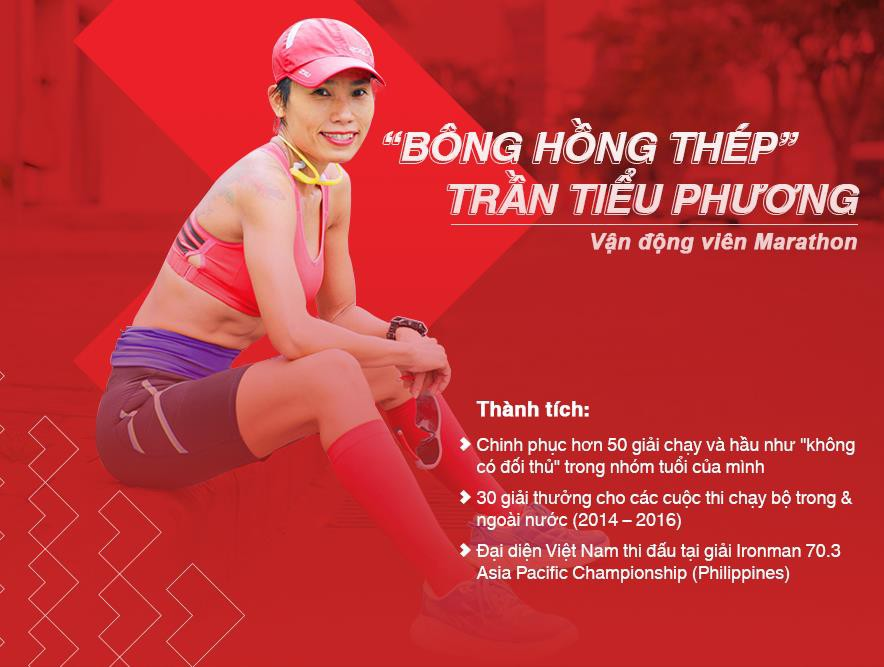

Đăng ký tham dự ngày Expo Day để trải nghiệm những trò chơi hấp
dẫn và những phần quà cực chất
(*) Hãy kiểm tra email của bạn trong vòng 72 giờ tới và
lưu lại. Bạn chỉ cần xuất trình email có chứa mã IDW khi đến check in ngày Expo mà không phải chờ đợi
lâu.
Những khoảnh khắc đáng nhớ
Cùng Techcombank nhìn lại những khoảnh khắc vượt trội của hàng ngàn vận động viên đã tham gia
trong giải Marathon Quốc tế Thành phố Hồ Chí Minh Techcombank năm 2018.
Đường chạy của những
giấc mơ
Hẹn gặp bạn tại Techcombank Marathon Hà Nội 2019
Nhìn lại chặng đường chinh phục
Giải Marathon quốc tế TP. Hồ Chí Minh Techcombank
2018
Nếu bạn cần tìm hiểu thêm thông tin về các hoạt động trước ngày
diễn ra Giải Marathon Quốc tế Thành phố Hồ Chí Minh Techcombank 2019 và cách nhận hình ảnh sau ngày chạy,
hãy liên hệ chúng tôi theo các thông tin được yêu cầu bên dưới.
Marathon Techcombank 2019: Tiểu Phương và hành trình của "bông
hồng thép" làng chạy Việt
Marathon là một môn thể thao sức bền đòi hỏi người chạy phải có thể chất và tinh thần bền
bỉ trên hành trình về vạch đích. Đó cũng là hành trình mà mỗi ngày, Tiểu Phương đã nỗ lực chinh
phục cố gắng phá bỏ mọi giới hạn để “trui rèn” bản thân từ một bông hồng mong manh trở thành một
con người đầy “bản lĩnh thép”.

Chỉ có một lựa chọn đó là "Nỗ lực hơn mỗi ngày"
Ý chí vượt qua thử thách của đường chạy marathon là một thứ sức mạnh tiềm ẩn, được nuôi bằng khao
khát cháy bỏng từ ngày này qua ngày khác. Tiểu Phương đã miệt mài tập luyện cho đến khi chinh phục
danh xưng mĩ miều "bông hồng thép" của làng chạy Việt Nam.
Trước khi được biết đến như một vận động viên marathon bán chuyên hàng đầu Việt Nam, Tiểu Phương
cũng như bao người phụ nữ khác với cuộc sống bận rộn cùng công việc chính là huấn luyện viên thể
hình và chăm lo cho gia đình nhỏ. Thậm chí, Tiểu Phương vốn được sinh ra với gene sức khỏe yếu hơn
bình thường. Cho đến khi lần đầu đặt chân lên đường chạy, những hạt giống ước mơ bên trong cô mới
vươn mình lớn dậy ngày một mạnh mẽ hơn.
Nếu không sở hữu tài năng thiên bẩm thì phải không ngừng nỗ lực, không ngừng tiến về phía trước.
Trong mắt người phụ nữ U50 này, chặng đua như được thu ngắn lại khi lộ trình được vạch ra rõ ràng.
Hoàn thành 100m trước, rồi đến 100m kế tiếp,... cứ thế tự động viên bản thân từng bước giải phóng cơ
thể khỏi giới hạn chịu đựng của một người bị cho là "phái yếu" và tiếp thêm động lực cho những người
phụ nữ Việt dám khẳng định bản thân trong môn thể thao thử thách khắc nghiệt về cả thể chất lẫn tinh
thần - marathon.
Cô từng chia sẻ về thói quen đảo ngược đồng hồ sinh học, đi ngủ từ 7 giờ tối để thức dậy lúc 1 giờ
sáng rồi chuẩn bị cho một ngày mới và bắt đầu tập luyện từ 2 giờ sáng. Cách duy nhất để trở nên vượt
trội hơn mỗi ngày là dành trọn tâm huyết để hoàn thành chỉ tiêu gồm nhiều bài tập khắc nghiệt mà cô
đặt ra cho bản thân. Cứ nỗ lực hết mình mỗi ngày, đích đến dù ở xa vạn dặm rồi cũng sẽ ngay trước
mắt. Chính vì vậy mà ước mơ chinh phục hàng chục, hay thậm chí là hàng trăm kilomet ở những đường
đua marathon chưa bao giờ khiến Tiểu Phương chùn bước.
Ở cuối đường chạy marathon, chiến thắng không nằm ở chiếc huy chương
Khi marathon chỉ vừa trở thành một trào lưu mới trong những năm gần đây thì Tiểu Phương đã kinh qua
hơn 50 giải chạy trong và ngoài nước, bao gồm các sự kiện thể thao đòi hỏi sức bền "khủng hàng đầu"
như TECHCOMBANK IRONMAN 70.3 Asia-Pacific Championship, Vietnam Mountain Marathon (100km), Vietnam
Jungle Marathon (70km), Vietnam Trail Marathon (70km) và trở thành vận động viên điền kinh bán
chuyên đạt chuẩn tham dự Boston Marathon - một trong 6 giải chạy đường dài danh giá hàng đầu thế
giới.
Tuy không phải giải đua nào Tiểu Phương cũng được vinh danh ở vị trí top những runner dẫn đầu nhưng
sau mỗi chặng đường dài bòn rút sức lực ấy, người ta luôn nhìn thấy Tiểu Phương với nụ cười tươi rói
trên môi. Theo cô, niềm đam mê và dám khẳng định ước mơ của mình bằng việc kiên trì theo đuổi từng
ngày chính là những giây phút đáng sống nhất. Dù phải đánh đổi bằng rất nhiều mồ hôi hay nước mắt
trên đường chạy, tất cả đều trở nên thật ý nghĩa khi nhìn lại và nhận ra đã vượt qua bản thân của
ngày hôm qua. Chiến thắng huy hoàng nhất chính là chiến thắng chính mình!
Marathon Quốc tế Thành phố Hồ Chí Minh Techcombank 2019: Cùng lan tỏa tinh thần "Vượt trội
hơn mỗi ngày" cho những ai dám ước mơ
Xuất phát từ con số 0 tròn trĩnh, Tiểu Phương đã dùng tất cả tâm huyết của mình cùng phương châm
sống vượt trội hơn mỗi ngày - kim chỉ nam để cô đạt được thành quả đáng ngưỡng mộ của ngày hôm nay.
Dám ước mơ, không quản ngại gian khó, luôn kiên trì hướng về mục tiêu là những bài học quý giá không
chỉ với riêng Tiểu Phương, mà còn dành cho bất kì ai muốn làm "bông hồng thép" từ một đóa hoa nhỏ
bé.
Lấy tinh thần "vượt trội hơn mỗi ngày" ấy làm cốt lõi, giải Marathon Quốc tế Techcombank đã ra đời
để cùng lan tỏa thông điệp ý nghĩa ấy đến với xã hội. Không phân biệt runner chuyên nghiệp hay là
người lần đầu biết đến marathon, giải đua Marathon Quốc tế Thành phố Hồ Chí Minh Techcombank trao cơ
hội để tất cả mọi người đều có cơ hội khám phá và vượt lên chính mình. Tại đây, người tham gia không
chỉ có trải nghiệm đặc biệt khi đua cùng 13,000 vận động viên đến từ khắp nơi trên thế giới, mà còn
được tham gia các hoạt động bên lề đầy thú vị với những thử thách vượt trội, nhất là cơ hội nghe các
chuyên gia chạy bộ tư vấn giúp bạn hiểu hơn về ý nghĩa tích cực mà marathon mang lại cho cuộc sống
của mình.
Dù ở bất kì độ tuổi nào, từ thiếu niên đến người lớn, bạn đều có thể tham gia giải Marathon Quốc tế
Thành phố Hồ Chí Minh Techcombank với nhiều cự ly khác nhau để lựa chọn. Hãy thử một lần đặt quyết
tâm lên đường chạy marathon và cảm nhận được ý nghĩa mà chặng đua mang lại cho cuộc sống của bạn như
điều mà "bông hồng thép" Tiểu Phương luôn tâm đắc.
---
Giải Marathon Quốc tế Thành phố Hồ Chí Minh Techcombank sẽ trở lại vào ngày 08/12, quy tụ
hơn 13,000 vận động viên tham dự đến từ khắp nơi trên thế giới. Đây chính là là cơ hội tuyệt vời
để bạn bắt đầu hành trình trải nghiệm, bứt phá giới hạn bản thân, chinh phục giấc mơ của chính
mình. Hãy đăng ký ngay để khởi động cho cuộc đua sắp tới tại đây.
Bài: Quang
GIẢI MARATHON QUỐC TẾ THÀNH PHỐ HỒ CHÍ MINH TECHCOMBANK 2019
TRỞ LẠI VỚI SỨC HÚT LỚN CHƯA TỪNG CÓ
Tổng số người tham gia sự kiện lên đến 13,000
người.
Sự kiện bắt đầu từ ngày 6.12, với cuộc đua chính diễn ra
ngày 8.12.
Sự kiện đóng vai trò như vòng loại của Giải Vô Địch Thế
Giới Theo Độ Tuổi Abbott World Marathon Majors Wanda 2021.
Tiếp tục lan tỏa tinh thần thể thao, lối sống lành mạnh,
và tinh thần “vượt trội hơn mỗi ngày”.
Sự kiện chạy bộ có số lượng vận động viên tham gia lớn
nhất Việt Nam.
[THÀNH PHỐ HỒ CHÍ MINH, ngày 10 tháng 09 năm 2019] Giải Marathon Quốc tế Thành phố Hồ Chí
Minh Techcombank 2019 đã mở rộng số lượng đăng ký hơn so với 10.000 suất ban đầu. Điều này cho
thấy xu hướng chạy bộ và tập luyện thể thao ở Việt Nam đang ngày càng mạnh mẽ hơn bao giờ hết. Đội
ngũ Sunrise Events Việt Nam rất vui mừng khi được chào đón thêm 3,000 vận động viên, sau khi giải
thu hút được 10,000 người đã đăng ký thi đấu, nâng tổng số người tham gia sự kiện lên đến 13,000
người, và tiếp tục là sự kiện chạy bộ có số lượng vận động viên tham gia lớn nhất Việt Nam.
Trong mùa giải năm nay, nhiều tuyến đường sẽ được mở rộng nhằm đảm bảo an toàn trong quá trình thi
đấu của các vận động viên, cũng như tạo thêm nhiều cơ hội tham gia cho những người yêu thích thể
thao với sự hỗ trợ nhiệt tình đến từ các sở ban ngành và Công An Thành Phố Hồ Chí Minh, Liên Đoàn
Điền Kinh Thành Phố. Sự kiện đã góp phần quan trọng trong vuệc tuyên truyền và quảng bá thông tin về
sự kiện đến với người dân thành phố và các du khách trong và ngoài nước.
“Lãnh đạo thành phố và các sở ban ngành đã dành sự hỗ trợ tuyệt vời nhằm tạo nền tảng cho sự kiện
phát triển nhanh chóng.” ông Đỗ Huỳnh Khánh Duy, Giám đốc Dự án của Sunrise Events Việt Nam cho
biết. “Chúng tôi rất cảm kích trước sự hỗ trợ nhiệt tình này. Đây là một động lực to lớn để chúng
tôi làm tốt công tác tổ chức giải đấu nhằm góp phần cỗ vũ lối sống lành mạnh và phát triển phong
trào thể thao trong cộng đồng dân cư tại thành phố xinh đẹp và năng động của chúng ta. Sự kiện này
cũng cho phép chúng tôi giới thiệu thành phố Hồ Chí Minh đến với du khách nước ngoài như một điểm
đến du lịch thể thao đầy tiềm năng tại Việt Nam.”
Trải nghiệm hàng loạt những hoạt động đầy thú vị
Sự kiện sẽ bắt đầu vào ngày thứ Sáu (06.12) khi “Làng Marathon” đón chào cộng đồng yêu thích thể
thao, các gia đình tới tham dự sự kiện đặc biệt này với hàng loạt các hoạt động vui chơi giải trí và
trải nghiệm. Từ các khu hội chợ sôi động với nhiều gian hàng thể thao đa dạng, trình diễn âm nhạc,
đặc biệt hơn chính là các buổi chia sẻ chuyên sâu về dinh dưỡng, kỹ thuật tập luyện marathon. Với 2
ngày thi đấu chính thức Thứ 7 (07.12) và Chủ Nhật (08.12), các cự ly từ Kids Run (dành cho các bé
lứa tuổi từ 5 đến 14), cự ly 5km, 10km, bán marathon (21.1 km), cho đến marathon (42.195 km) sẽ lần
lượt được diễn ra, hứa hẹn nhiều kỷ lục mới sẽ được thiết lập ở tất cả các cự ly trong mùa giải năm
nay. Tất cả vận động viên hoàn thành cuộc chạy trong thời hạn quy định sẽ được trao huy chương hoàn
thành cuộc đua tại vạch đích.
“Tại Việt Nam, phong trào chạy bộ rèn luyện sức khỏe ngày càng được đề cao, vì vậy Techcombank luôn
tự hào đồng hành cùng giải đấu nhằm góp phần thúc đẩy sự phát triển bộ môn chạy bộ nói riêng và thể
thao nói chung, cũng như khuyến khích lối sống năng động và khoẻ mạnh trong cộng đồng người Việt.”
Bà Nguyễn Thị Vân Anh, Giám đốc Tiếp thị của Techcombank cho biết. “Nhìn thấy hàng nghìn người tham
gia đăng ký mỗi mùa giải đã truyền cảm hứng cho tất cả chúng tôi tại Techcombank và chúng tôi mong
muốn có thể khuyến khích thêm thật nhiều người tham gia vào phong trào chạy bộ, tập luyện thể thao
và thi đấu trong cuộc đua mang tính biểu tượng sắp tới này và cùng nhau xây dựng cộng đồng “vượt
trội mỗi ngày”.
Ngoài ra, giải đấu còn thu hút nhiều vận đông viên tham gia bởi đây là sự kiện duy nhất tại Việt
Nam đạt tiêu chuẩn cho Giải Vô Địch Thế Giới Theo Độ Tuổi Abbott World Marathon Majors Wanda
(AbbottWMM) 2021. Các vận động viên có thành tích tốt trong hạng mục nhóm tuổi sẽ được cộng điểm
trong bảng xếp hạng toàn cầu và có thể nhận được cơ hội đại diện cho Việt Nam tham dự sự kiện thể
thao quốc tế này cùng với các đại diện đến từ hơn 150 quốc gia trên khắp thế giới.
Tham gia giải Marathon Quốc tế Thành Phố Hồ Chí Minh Techcombank, các vận động viên không chỉ được
thử sức bứt phá giới hạn bản thân trên đường chạy, mà còn có cơ hội thay đổi cuộc sống của những
người xung quanh từ chính những bước chạy của mình. Hoàn thành cự ly thi đấu trong thời gian quy
định, với mỗi km hoàn thành, Ban tổ chức sẽ đóng góp 10.000VNĐ vào Quỹ vì người nghèo và Quỹ bảo trợ
tài năng trẻ thành phố Hồ Chí Minh.
Giải Marathon quốc tế Thành phố Hồ Chí Minh 2019, do Sunrise Events Việt Nam tổ chức, sẽ dẫn dắt
người tham gia chạy xuyên qua Thành phố Hồ Chí Minh sôi động, với cụm đường chạy đi qua nhiều công
trình kiến trúc lịch sử, hiện đại, và đường về đích tuyệt đẹp dọc theo bờ song Sài Gòn, mang lại cho
người tham gia một tầm nhìn bao quát về đường chân trời của Thành phố Hồ Chí Minh.
Bên cạnh sự hỗ trợ mạnh mẽ của Sở Du lịch, Sở Văn hóa và Thể thao và Liên đoàn Điền kinh Thành phố
Hồ Chí Minh, sự kiện này sẽ không thể được thực hiện một cách tốt đẹp nếu không có sự đồng hành của
đối tác chiến lược Techcombank và nhà tài trợ địa điểm vạch đích, Empire City.
Để đăng ký và biết thêm thông tin về giải Marathon Quốc tế Thành phố Hồ Chí Minh 2019, vui lòng
truy cập www.marathonhcmc.com.
---------
Về Sunrise Events Việt Nam
Sunrise Events Việt Nam (SEV) được thành lập vào năm 2015 và là công ty được Tập đoàn Triathlon Thế giới cấp phép độc quyền tổ chức sự kiện IRONMAN 70.3 tại Việt Nam với đường đua được vinh danh là “Đường đua Triathlon cự ly dài đẹp nhất tại khu vực Châu Á 2016: Thách thức Việt Nam”.
Tầm nhìn của công ty là tạo dựng sự kiện mang đẳng cấp thế giới, các sự kiện đề cao tính bền bỉ và khả năng chuyển hóa để thúc đẩy lối sống năng động, đầy cảm hứng và lành mạnh cho người Việt Nam, đồng thời đưa Việt Nam trở thành trung tâm du lịch thể thao hàng đầu ở Châu Á. Ngoài IRONMAN 70.3 Việt Nam, công ty cũng đồng tổ chức cuộc thi Marathon Quốc Tế Thành Phố Hồ Chí Minh, sự kiện chạy bộ quốc tế lớn nhất trong cả nước. Đội ngũ Sunrise Events Việt Nam phấn khích vì mang lại được sự ảnh hưởng tích cực đến cộng đồng và mong muốn sẽ tiếp tục tổ chức các hoạt động và sự kiện trong tương lai.
Về Techcombank
Thành lập năm 1993, Techcombank là một trong những NHTM lớn nhất Việt Nam và một trong những ngân hàng hàng đầu ở Châu Á. Techcombank cung cấp các sản phẩm và dịch vụ tài chính đa dạng cho hơn sáu triệu khách hàng cá nhân, các doanh nghiệp vừa và nhỏ và các doanh nghiệp lớn ở Việt Nam trên mạng lưới 313 chi nhánh trên toàn quốc cũng như trên kênh ngân hàng internet và ngân hàng số. Phương thức kinh doanh hệ sinh thái của ngân hàng, được áp dụng trên sáu lĩnh vực kinh tế trọng tâm là nhà ở, ô tô, du lịch và giải trí, dịch vụ tài chính, hàng tiêu dùng nhanh, tiện ích và viễn thông, tạo nên sự khác biệt của TCB trên bối cảnh nền kinh tế Việt Nam với sức tăng trưởng hàng đầu thế giới.
BẠN CÓ BIẾT MỖI BƯỚC CHẠY CỦA BẠN SẼ TRUYỀN ĐỘNG LỰC
CHO NHỮNG ƯỚC MƠ KHÁC ĐƯỢC HIỆN THỰC HÓA?
Techcombank sẽ đóng góp 10.000 VNĐ vào Quỹ Từ Thiện với mỗi kilomet chạy được hoàn
thành tại Giải Marathon Quốc tế TP. HCM Techcombank
Tham gia giải Marathon Quốc tế Thành phố Hồ Chí Minh Techcombank năm 2019 diễn ra vào ngày
08/12/2019 tới đây, các vận động viên không chỉ thử sức giới hạn bản thân trên đường chạy,
mà còn có cơ hội thay đổi cuộc sống của những người xung quanh từ chính những bước chạy của
mình. Hoàn thành cự ly thi đấu và về đích trong thời gian quy định hợp lệ của Ban Tổ chức,
với mỗi km chạy sẽ được Techcombank đóng góp 10.000 VND vào Những Quỹ từ thiện lớn nhất tại
Việt Nam.
Mỗi bước chạy đều mang ý nghĩa lớn lao, đóng góp vào hoạt động xã hội
Thông qua hoạt động đóng góp vào quỹ từ thiện, giải Marathon Quốc tế Thành phố Hồ Chí Minh
Techcombank 2019 sẽ trở thành cơ hội để mỗi cá nhân kết nối đam mê với mục tiêu nhân ái qua
mỗi km chạy được. Điều này sẽ góp phần truyền động lực để các vận động viên tham gia tranh
tài hoàn thành đường đua và về đích.
Mỗi kilomet trên đường chạy, các vận động viên sẽ đóng góp 10.000 VNĐ vào Quỹ từ
thiện
Ông Nguyễn Lê Quốc Anh, Tổng giám đốc Techcombank chia sẻ: “Chúng tôi vui mừng được góp
phần kiến tạo một sân chơi đẳng cấp quốc tế cho cộng đồng chạy bộ Việt Nam cũng như mang tới
cơ hội trải nghiệm và thi đấu tại thành phố lớn nhất Việt Nam cho các vận động viên nước
ngoài. Việc Ban tổ chức triển khai gây quỹ sẽ giúp mỗi bước chạy của các vận động viên mang
ý nghĩa to lớn và lan tỏa những giá trị tốt đẹp trong xã hội. Đây cũng là một trong những
giá trị hướng đến cộng đồng mà Techcombank luôn theo đuổi”.
Với việc truyền tải tinh thần vượt trội hơn mỗi ngày, Techcombank kêu gọi cả xã hội cùng
nhau vượt trội hơn, hiện thực hóa ước mơ của chính mình. Giải Marathon Quốc tế TP.HCM
Techcombank 2019 là không chỉ là nơi tiếp lửa và sân chơi lành mạnh cho các bạn trẻ mà còn
tạo điều kiện để giúp đỡ cho những ước mơ khác được tiếp nối và bay cao xa hơn.
GIỚI TRẺ VIỆT HỌC CÁCH KHÔNG BỎ CUỘC TRÊN ĐƯỜNG CHẠY
Chạy bộ không chỉ là môn thể chất, mà còn truyền cảm hứng không bỏ cuộc cho người trẻ.
Mỗi giọt mồ hôi trên đường chạy là “minh chứng” cho sự quyết tâm theo đuổi đến cùng của
bạn.
MARATHON
Không phải tự nhiên mà các giải marathon phong trào, từ nghiệp dư đến chuyên nghiệp ngày càng
phát triển mạnh tại Việt Nam. Dễ tập luyện, nâng cao hiệu quả cả về thể chất lẫn tinh thần, dễ
kết nối và truyền cảm hứng cho nhau… là những lý do khiến chạy bộ trở thành môn thể thao cực kỳ
phù hợp cho người Việt trẻ - vốn luôn bận rộn và ít khi có thời gian đầu tư cho những phòng tập
gym.
Hơn nữa, các giải chạy marathon thường không đặt nặng vấn đề thắng thua, mà chủ yếu tạo cơ hội
để vận động viên được dịp thử thách chính bản thân, được giao lưu, học hỏi lẫn nhau, cũng như
mang đến những giờ phút giải trí, vận động.
Cũng trên chính những đường chạy này, bạn trẻ có dịp rèn luyện khả năng không bỏ cuộc giữa
chừng, cố gắng hết sức để về đích - những thói quen rất cần thiết nếu muốn thành công trong cuộc
sống hiện đại đầy áp lực.
Nếu nghĩ rằng mình quá bận rộn, hay thể trạng không đủ khỏe cho chạy bộ, bạn nên biết rằng ở
phía bên kia đại dương, có rất nhiều người đã xỏ chân vào giày và chạy, thay vì tự “ru ngủ” mình
bằng những lý do.
Eliud Kipchoge, huyền thoại làng chạy marathon thế giới từ Kenya với thành tích đã chiến thắng
10 giải chạy marathon trong số 11 giải mà anh tham gia. Đặc biệt, tại Berlin Marathon 2018
(Đức), Kipchoge đã lập kỷ lục thế giới mới với thành tích 2 giờ 1 phút 39 giây, và hiện tại anh
đang giữ vị trí là người chạy marathon nhanh nhất thế giới.
Trên trang chính thức của Ban tổ chức Berlin Marathon 2018 đã viết: "Kipchoge về đích với kỷ
lục thế giới mới, và sẽ được nhớ tới trong hàng thập kỷ tới. Đây là vận động viên chạy marathon
nhanh nhất mọi thời đại".
Đến khi biết được lý do cho kỳ tích đó, khán giả thậm chí còn “trầm trồ” hơn nữa. Tất cả bắt
nguồn từ tuổi thơ nghèo khó và sống xa trường học của Kipchoge. Không có phương tiện đi lại, cậu
bé nhà nghèo nhưng nghị lực chẳng còn cách nào khác ngoài việc phải chạy bộ thật nhanh đến lớp
mỗi ngày. Việc phải chạy bộ một quãng đường dài không ngừng nghỉ mỗi ngày dần trở thành nền tảng
cho sự nghiệp thi đấu marathon đỉnh cao về sau của Kipchoge.
Theo Kipchoge, trên đường chạy, không phải đôi chân quyết định tất cả, mà đó là trái tim và tâm
trí. Trong mỗi cuốn sổ ghi lại việc tập luyện, anh đều viết lại công thức: "Động lực + kỷ luật =
sự kiên định".
Bắt nguồn từ những khó khăn cá nhân, Kipchoge đã biến nó thành động lực để thay đổi vận mệnh
của mình. Nếu ngày đó, anh lười nhác và đổ lỗi cho số phận, có lẽ thế giới sẽ mất đi một vận
động viên chạy marathon nhanh nhất thế giới.
Ở trường hợp khác, Usain Bolt là một điển hình cho việc không được ngủ quên trên chiến thắng.
Anh là vận động viên điền kinh có những ưu thế trời ban với chiều cao 1m96, đôi chân cân đối như
tượng tạc, sải bước rộng hơn người thường… Nhưng Bolt vẫn luyện tập ngày đêm để chiến thắng đối
thủ và vượt qua yếu điểm thể lực kém.
Ngay cả việc giành chiến thắng từ 5 tuổi cũng không làm anh ỷ lại, mà còn tạo thêm động lực để
tập luyện khắt khe hơn nữa. Mỗi ngày, Bolt dành rất nhiều thời gian để tập luyện, từ những bài
tập thể hình, chạy tốc độ đến nâng tạ….
Nhờ đó, anh đã trở thành huyền thoại sống của điền kinh thế giới với 8 lần vô địch Olympic, 3
lần phá vỡ kỷ lục thế giới và được mệnh danh là người đàn ông chạy nhanh nhất hành tinh.
Tháng 4/2015, vận động viên điền kinh người Anh, Kevin Carr đã trở thành người chạy vòng quanh
thế giới nhanh nhất với 26.232 km trong 19 tháng.
Mỗi ngày, Kevin hoàn thành từ 1 - 2 chặng đường chạy, băng qua các sa mạc, những dãy núi cao,
cũng như nhiều vùng đất khắc nghiệt trên thế giới.
Người bạn đồng hành trong chuyến đi của Kevin chính là một xe đẩy hành lý, nặng gấp đôi trọng
lượng của anh. Cả hai cùng nhau đặt chân qua 26 quốc gia, Kevin đã thay 16 đôi giày trong suốt
chuyến hành trình kéo dài 19 tháng. Anh đã gặp 26 con gấu và suýt một lần bị ăn thịt. Ngoài ra,
anh còn bị tông xe và sốc nhiệt tại Ấn Độ.
Hồi năm 20 tuổi, Kevin bị trầm cảm và từng có ý định tự tử. Anh cho biết sự quyết tâm chinh
phục hành trình vòng quanh thế giới là để gây quỹ từ thiện cho những bệnh nhân tâm thần và Hội
chữ thập Đỏ Anh.
Ba câu chuyện trên là minh chứng cho tinh thần chiến đấu không biết mệt mỏi, luôn kiên định đến
cùng của một người chạy đích thực. Dù áo đẫm mồ hôi, đôi chân đã sưng lên phồng rộp đau đớn,
hành trình đằng đẵng nắng rát hay mưa bão phía trước, bước chân của các vận động viên vẫn kiên
định. Họ đại diện cho những người dám thực hiện giấc mơ và theo đuổi đam mê của mình, không
ngừng cố gắng để từng bước chinh phục những thử thách của cuộc đời.
Những vận động viên đó đã cho cả thế giới thấy rằng, nếu bạn đã bắt đầu chạy vì giấc mơ của
mình, hãy tiếp tục đuổi theo ước mơ. Chắc chắn con đường phía trước sẽ không dễ dàng và trải đầy
hoa hồng, nhưng chỉ cần cố gắng và kiên định thì không ước mơ nào là không thể.
Không phải ai cũng có đủ tố chất để trở thành một vận động viên marathon, nhưng bạn hoàn toàn
có thể chạy để chiến thắng chính bản thân mình.
Anh Việt Chiến (30 tuổi, TP.HCM), từng tham gia nhiều giải chạy marathon cấp thành phố tự hào
kể về thời điểm may mắn tìm thấy chạy bộ như chiếc phao cứu sinh, khi bản thân anh không có thời
gian và điều kiện để chơi các môn thể thao đồng đội.
Anh cho biết một trong những điều tuyệt vời nhất về chạy bộ là nó không từ chối bất kỳ ai. Trừ
khi mắc một số bệnh tim mạch, còn đâu, dù thể trạng của bạn thế nào, có kỹ thuật hay không, bạn
vẫn có thể trở thành một người chạy. Điều quan trọng là sự quyết tâm và quãng đường chạy của
bạn.
Chỉ sau 4 năm kiên trì chạy bộ 5 buổi mỗi tuần, anh Chiến giờ đã có thể tự tin chinh phục nhiều
cuộc thi chạy marathon lên đến 42 km.
Ngày càng nhiều người trẻ Việt lựa chọn chạy bộ cho khoảng thời gian vận động ít ỏi trong ngày.
Không cần đến phòng tập gym hay trang thiết bị hiện đại, chỉ với một đôi giày chạy và ý chí mãnh
liệt là đủ để bạn theo đuổi bộ môn này trong nhiều năm.
Chị Hoàng Thị Thoa (28 tuổi, Hà Nội) lại là một trường hợp điển hình từ một người không thể
sống thiếu không khí điều hòa đến vận động viên chinh phục đường chạy marathon 10 km một cách dễ
dàng.
Ngoài lợi ích tăng cường thể lực mà ai cũng biết rõ, chị Thoa thích chạy bộ vì đó là khi đầu óc
trống rỗng nhất, không nghĩ tới những nỗi lo trong cuộc sống. Hơn nữa, chạy giúp chị tập tính
kiên định và không từ bỏ. Chị cho rằng thói quen đó có rất nhiều lợi ích khi áp dụng vào công
việc và cuộc sống.
Chạy bộ cũng như việc theo đuổi ước mơ, để hiện thực hóa luôn là hành trình đòi hỏi nhiều nỗ
lực. Để làm được điều ấy, mỗi người cần có tinh thần không ngừng cố gắng và vượt trội hơn mỗi
ngày, từ đó từng bước chạm tay đến vạch đích.
Biến ước mơ thành hiện thực chưa bao giờ là hành trình đơn giản và dễ dàng, cũng như duy trì
thói quen chạy bộ luôn khó khăn hơn việc xỏ giày vào và chạy lấy lệ mỗi tháng một lần. Chỉ tinh
thần kiên định cùng quyết tâm mỗi ngày mới có thể giúp bạn trở nên hoàn thiện hơn, và một ngày
nào đó “về đích” với ước mơ của đời mình.
Nhằm giúp người Việt trẻ có cơ hội chinh phục những đường chạy marathon, qua đó rèn luyện không
ngừng đức tính kiên định, không từ bỏ theo đuổi mục tiêu, hiện thực hóa ước mơ, rất nhiều cuộc
thi marathon đã được tổ chức định kỳ hàng năm và thu hút sự tham gia của hàng nghìn vận động
viên chuyên và không chuyên.
Trong số đó, có thể kể đến giải Marathon Quốc tế TP.HCM Techcombank được tổ chức hàng năm, với
nhiều cự ly dành cho mọi lứa tuổi, từ thiếu nhi đến người lớn. Là một giải chạy uy tín, Marathon
Quốc tế TP.HCM Techcombank năm nay sẽ được tổ chức vào ngày 8/12 với sự góp mặt của hơn 10.000
vận động viên. Đây là mùa giải thứ 3 được tổ chức, đi kèm đó là nhiều hoạt động vui chơi, triển
lãm thể thao, hội chợ, âm nhạc, chuyên gia tư vấn về chạy bộ… diễn ra trong nhiều ngày.
Nếu muốn trở thành một vận động viên marathon và tham gia các giải chạy, bạn nên bắt đầu ngay
từ hôm nay. Không có ai ngủ dậy rồi bỗng dưng thấy mình lao phăng phăng về đích, cũng không ai
chỉ cần hô hào quyết tâm là sẽ thành công và chạm tới ước mơ của cuộc đời. Để chạm tới điểm
đích, điều bạn cần làm là sải những bước chạy nhỏ mỗi ngày, cũng như nỗ lực, cố gắng hơn nữa
trong cuộc sống.
Đường chạy cuộc đời dạy chúng ta vô vàn bài học, ngã ở đâu đứng lên ở đó, kiên trì bền bỉ rồi
sẽ đạt được điều mong muốn. Giải Marathon Quốc tế TP.HCM Techcombank 2019 sẽ tiếp lửa cho các
bạn trẻ, truyền động lực cho những bước chạy đầu tiên để bạn có thể tự tin sải bước vào cuộc đời
rộng lớn.
---
Giải Marathon Quốc tế Thành phố Hồ Chí Minh Techcombank sẽ trở lại vào ngày 8/12, quy
tụ hơn 10.000 vận động viên tham dự đến từ khắp nơi trên thế giới. Đây chính là là cơ hội
tuyệt vời để bạn bắt đầu hành trình trải nghiệm, bứt phá giới hạn bản thân, chinh phục giấc mơ
của chính mình. Hãy đăng ký ngay để khởi động cho cuộc đua sắp tới tại
đây.
Bài: Giang Quốc Hoàng
Đồ họa: Anh Nguyễn
Khinh khí cầu khổng lồ lần đầu tiên sẽ xuất hiện trên bầu
trời Tp.HCM
Vào ngày 6/12 và 7/12/2019, lần đầu tiên khinh khí cầu khổng lồ sẽ xuất hiện trên bầu
trời Hồ Chí Minh với thông điệp truyền tải hiện thực hóa những ước mơ bay cao.
Những ai trót yêu các “quả bóng bay khổng lồ” sẽ cơ hội được tham gia cuộc thi chụp hình cùng
khinh khí cầu vô cùng thú vị - nằm trong khuôn khổ “Làng Marathon” của Giải Marathon Quốc tế
Thành phố Hồ Chí Minh Techcombank. Đây là một trong những hoạt động hiếm thấy ở TP.HCM, làm mãn
nhãn những ai may mắn chứng kiến.
Khinh khí cầu khổng lồ lần đầu tiên xuất hiện trên bầu trời Tp.HCM
Ngoài ra, bạn còn có cơ hội tham gia cuộc thi săn ảnh khinh khí cầu. Hãy nhanh tay bắt trọn
những góc hình đẹp nhất của khinh khí cầu “Vượt trội” trên bầu trời. Những “phó nháy” săn được
bức ảnh khinh khí cầu ấn tượng nhất bay lên sẽ nhận được giải thưởng đặc biệt của Techcombank.
Thể lệ cuộc thi và kết quả sẽ được công bố tại Fanpage Techcombank Việt Nam vào ngày 5/12.
Mỗi kilomet trên đường chạy, các vận động viên sẽ đóng góp 10.000 VNĐ vào Quỹ từ
thiện
Hình ảnh của chiếc khinh khí cầu bay trên bầu trời Tp.HCM chính là biểu tượng cho ước mơ không
bao giờ dừng lại của các bạn trẻ và đó cũng chính là tinh thần của giải Marathon Quốc tế TP.HCM
Techcombank 2019 - đường đua dành cho người trẻ bản lĩnh, dám chinh phục ước mơ. Thông qua giải,
Techcombank mong muốn tiếp thêm lửa để người trẻ vẽ tiếp ước mơ bằng những bước chân kiên định.
Sau hai mùa thành công, trở lại lần 3, giải Marathon Quốc tế TP.HCM Techcombank 2019 sẽ quy tụ
13.000 vận động viên từ khắp nơi trên thế giới, diễn ra vào ngày 8/12.
---
Giải Marathon Quốc tế Thành phố Hồ Chí Minh Techcombank sẽ trở lại vào ngày 8/12, quy
tụ hơn 10.000 vận động viên tham dự đến từ khắp nơi trên thế giới. Đây chính là là cơ hội
tuyệt vời để bạn bắt đầu hành trình trải nghiệm, bứt phá giới hạn bản thân, chinh phục giấc mơ
của chính mình. Hãy đăng ký ngay để khởi động cho cuộc đua sắp tới tại
đây.


{kind=link}
{kind=link}
{kind=link}
{kind=link}
{kind=link}
{kind=link}
{kind=link}
{kind=link}
{kind=link}
{kind=link}
{kind=link}
{kind=link}
{kind=link}
{kind=link}
{kind=link}
{kind=link}
{kind=link}
{kind=link}
{kind=link}
{kind=link}
{kind=link}
{kind=link}
{kind=link}
{kind=link}
{kind=link}
{kind=link}
{kind=link}
{kind=link}
{kind=link}